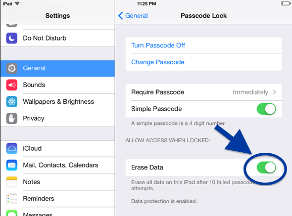
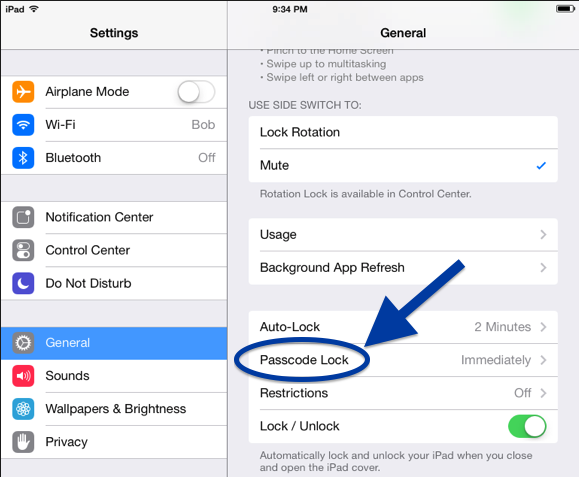
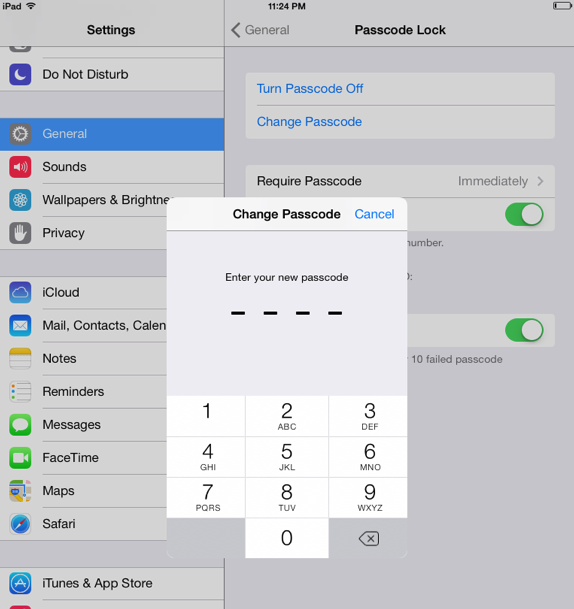
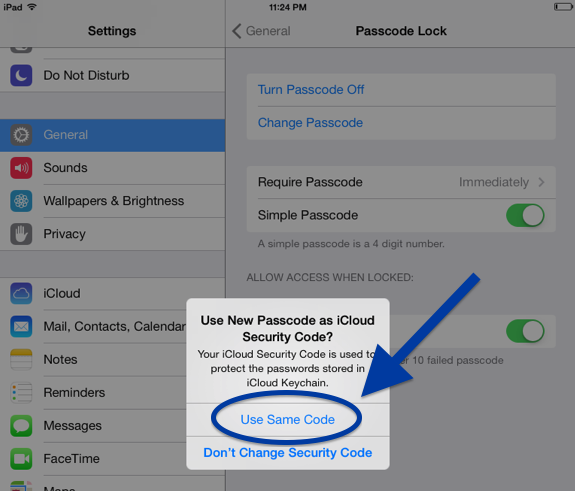
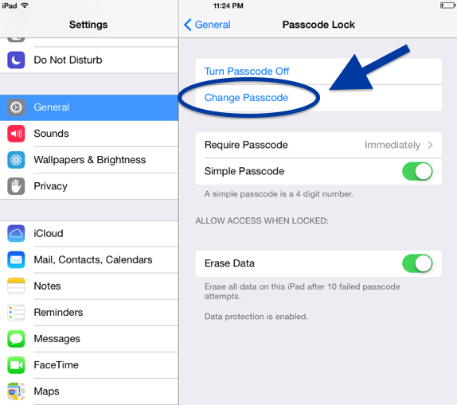
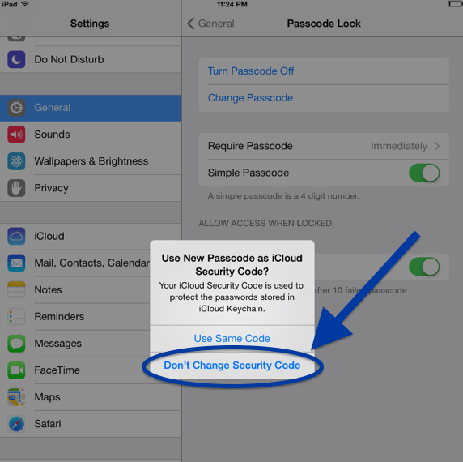

iCloud Keychain - How To Maximize Minimum Security
-- written by Sebastian Raschka on October 25, 2013
TweetApple just released their latest operating system for Mac, OS X Mavericks, accompanied by an iOS update to 7.1. One of the new exciting features was iCloud Keychain, a password management tool that let's the user save their passwords securely encrypted on Apple servers and syncs them across multiple Apple devices.
One important feature that Apple forgot to implement though, is a convenient option to change the Keychain passcode. Because it uses a 4-digit code, it could easily be compromised and you might want to change it regularly.
It is quite obvious that a 4-digit code can be figured out easily. A simple brute force approach would be to try out all different number combinations between 0000 and 9999. So if you chose a passcode for your iCloud Keychain that is different from the passcode to unlock the device, the number of maximum combinations would increase by the power of 2. In the worst case scenario, a thief has to try 10,000 combinations twice now - one time to unlock the iOS device, and a second time to unlock iCloud Keychain.
This might buy you just enough time to remotely erase your device. However, I wouldn’t want to rely on that fact and take this risk. Also, hacking the lock screen might already be sufficient to access your email application and send out password resets for your accounts.
Thus, if you are planning to use iCloud Keychain, you should at least enable the option to delete your device after 10 failed password attempts. By backing up your device regularly to iCloud and/or your Mac, it will not be a big deal if your device should ever be swiped from its data by accident.

So, once you choose to give iCloud Keychain a try, you might want to know how change the passcode.
How to change the passcode
Go to the “Settings” and click on “Passcode Lock” and you will be prompted to enter your passcode to proceed to the submenu.
Next, click on “Change Passcode” and select the passcode that you want to use for Keychain.
You will be asked if you want to use this passcode as “iCloud Security Code.” By clicking “Use Same Code”, you have now successfully changed your iCloud passcode.
Lastly, to choose a different password for your lock screen, you have to change your passcode again by clicking on “Change Passcode”. Enter a different passcode now, but this time proceed by selecting “Don’t Change Security Code.”
 This might sound like a very inconvenient procedure, but it shouldn’t take more than a minute and currently, it is the only choice we have until Apple decides to add an option to directly change the iCloud security code on iOS.